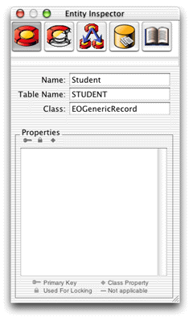
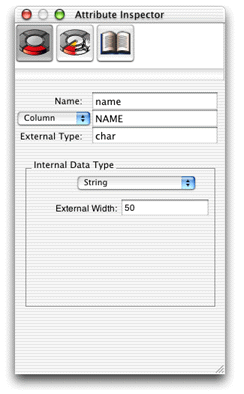

Build
the Model
EOModeler creates an empty model containing just a database
connection dictionary, which specifies the adaptor type, database
URL, and other basic information. Click the root of the object tree
(probably titled "UNTITLED0"), and then choose Inspector from
the Tools menu to see the database connection dictionary.
| Note: The
model you'll create will initially be suboptimal so that the tutorial
can demonstrate some features of Java Client you wouldn't otherwise
see with a perfect model. |
Follow these steps to add a table with attributes to the model:
- Create a
new entity by selecting Add Entity from the Property menu.
- Select Inspector from the Tools menu.
- In the Entity Inspector, change the Name field to "Student"
and the Table Name field to "STUDENT." Leave the Class field
"EOGenericRecord." See Figure 3-5.
Figure
3-5 Entity Inspector

- Add a new attribute by selecting Add Attribute from the Property
menu. The title of the Inspector window changes to "Attribute
Inspector."
- In the Attribute Inspector, change the Name field to "name"
and the Column name to "NAME."
- In the External Type field, enter "char."
- Choose String from the Internal Data Type pop-up menu, and
enter "50" in the External Width field, as shown in Figure 3-6.
Figure
3-6 Name Attribute Inspector

- Add a second attribute named "gpa" with Column name "GPA."
Enter "int" in the External Type field and choose Integer for
Internal Data Type. The types selected here are the suboptimal part
of the model that will be corrected in a later step.
© 2002 Apple Computer, Inc. (Last Updated May 1, 2002)